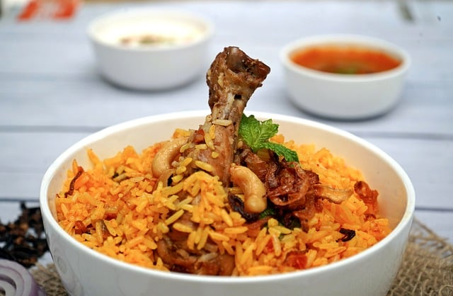

Biryani

Biryani is a popular rice dish made with layers of flavorful basmati rice, meat (like chicken, lamb, or beef), or vegetables, cooked with spices. It's known for its rich aroma and taste, with ingredients like saffron, cumin, and onions often adding to the flavor.
There are many types of biryani, with each region having its own style, such as Hyderabadi biryani, which is spicy, and Lucknowi biryani, which is milder and more fragrant. Given below is a recipe of Chicken Biryani.
Ingredients
- 300kg basmati rice
- 25g butter
- 1 large onion, finely sliced
- 1 bay leaf
- 3 cardamom pods
- Small cinnamon stick
- 1 tsp turmeric
- 4 skinless chicken breasts, cut into large chunks
- 4 tbsp balti curry paste
- 85g raisins
- 850ml chicken stock
- 30g coriander, 1/2 chopped, 1/2 leaves picked and 2 tbsp toasted flaked almonds, to serve
Steps
- Step 1: Soak 300g basmati rice in warm water, then wash in cold until the water runs clear.
- Step 2: Heat 25g butter in a saucepan and cook 1 finely sliced large onion with 1 bay leaf, 3 cardamom pods and 1 small cinnamon stick for 10 mins.
- Step 3: Sprinkle in 1 tsp turmeric, then add 4 chicken breasts, cut into large chunks, and 4 tbsp curry paste. Cook until aromatic.
- Step 4: Stir the rice into the pan with 85g raisins, then pour over 850ml chicken stock.
- Step 5: Place a tight-fitting lid on the pan and bring to a hard boil, then lower the heat to a minimum and cook the rice for another 5 mins.
- Step 6: Turn off the heat and leave for 10 mins. Stir well, mixing through 15g chopped coriander. To serve, scatter over the leaves of the remaining 15g coriander and 2 tbsp toasted almonds.